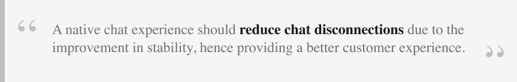
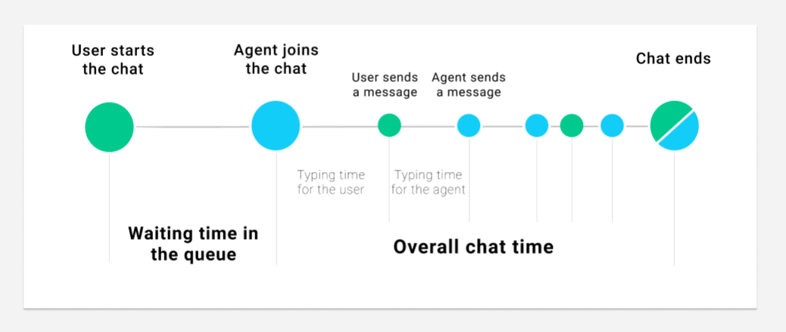

Product
Product
Reshaping Chat Support for Our Users


Introduction
The Grab support team plays a key role in ensuring our users receive support when things don’t go as expected or whenever there are questions on our products and services.
In the past, when users required real-time support, their only option was to call our hotline and wait in the queue to talk to an agent. But voice support has its downsides: sometimes it is complex to describe an issue in the app, and it requires the user’s full attention on the call.
With chat messaging apps growing massively in the last years, chat has become the expected support channel users are familiar with. It offers real-time support with the option of multitasking and easily explaining the issue by sharing pictures and documents. Compared to voice support, chat provides access to the conversation for future reference.
With chat growth, building a chat system tailored to our support needs and integrated with internal data, seemed to be the next natural move.
In our previous articles, we covered the tech challenges of building the chat platform for the web, our workforce routing system and improving agent efficiency with machine learning. In this article, we will explain our approach and key learnings when building our in-house chat for support from a Product and Design angle.

Why Reinvent the Wheel
We wanted to deliver a product that would fully delight our users. That’s why we decided to build an in-house chat tool that can:
- Prevent chat disconnections and ensure a consistent chat experience: Building a native chat experience allowed us to ensure a stable chat session, even when users leave the app. Besides, leveraging on the existing Grab chat infrastructure helped us achieve this fast and ensure the chat experience is consistent throughout the app. You can read more about the chat architecture here.
- Improve productivity and provide faster support turnarounds: By building the agent experience in the CRM tool, we could reduce the number of tools the support team uses and build features tailored to our internal processes. This helped to provide faster help for our users.
- Allow integration with internal systems and services: Chat can be easily integrated with in-house AI models or chatbot, which helps us personalise the user experience and improve agent productivity.
- Route our users to the best support specialist available: Our newly built routing system accounts for all the use cases we were wishing for such as prioritising certain requests, better distribution of the chat load during peak hours, making changes at scale and ensuring each chat is routed to the best support specialist available.
Fail Fast with an MVP
Before building a full-fledged solution, we needed to prove the concept, an MVP that would have the key features and yet, would not take too much effort if it fails. To kick start our experiment, we established the success criteria for our MVP; how do we measure its success or failure?
Defining What Success Looks Like
Any experiment requires a hypothesis - something you’re trying to prove or disprove and it should relate to your final product. To tailor the final product around the success criteria, we need to understand how success is measured in our situation. In our case, disconnections during chat support was one of the key challenges faced so our hypothesis was:

Starting with Design Sprint
Our design sprint aimed to solutionise a series of problem statements, and generate a prototype to validate our hypothesis. To spark ideation, we run sketching exercises such as Crazy 8, Solution sketch and end off with sharing and voting.


Defining MVP Scope to Run the Experiment
To test our hypothesis quickly, we had to cut the scope by focusing on the basic functionality of allowing chat message exchanges with one agent.
Here is the main flow and a sneak peek of the design:


What We Learnt from the Experiment
During the experiment, we had to constantly put ourselves in our users’ shoes as ‘we are not our users’. We decided to shadow our chat support agents and get a sense of the potential issues our users actually face. By doing so, we learnt a lot about how the tool was used and spotted several problems to address in the next iterations.
In the end, the experiment confirmed our hypothesis that having a native in-app chat was more stable than the previous chat in use, resulting in a better user experience overall.
Starting with the End in Mind
Once the experiment was successful, we focused on scaling. We defined the most critical jobs to be done for our users so that we could scale the product further. When designing solutions to tackle each of them, we ensured that the product would be flexible enough to address future pain points. Would this work for more channels, more users, more products, more countries?
Before scaling, the problems to solve were:
- Monitoring the performance of the system in real-time, so that swift operational changes can be made to ensure users receive fast support;
- Routing each chat to the best agent available, considering skills, occupancy, as well as issue prioritisation. You can read more about the our routing system design here;
- Easily communicate with users and show empathy, for which we built file-sharing capabilities for both users and agents, as well as allowing emojis, which create a more personalised experience.
Scaling Efficiently
We broke down the chat support journey to determine what areas could be improved.

Reducing Waiting Time
When analysing the current wait time, we realised that when there was a surge in support requests, the average waiting time increased drastically. In these cases, most users would be unresponsive by the time an agent finally attends to them.
To solve this problem, the team worked on a dynamic queue limit concept based on Little’s law. The idea is that considering the number of incoming chats and the agents’ capacity, we can forecast the number of users we can handle in a reasonable time, and prevent the remaining from initiating a chat. When this happens, we ensure there’s a backup channel for support so that no user is left unattended.
This allowed us to reduce chat waiting time by ~30% and reduce unresponsive users by ~7%.
Reducing Time to Reply
A big part of the chat time is spent typing the message to send to the user. Although the previous tool had templated messages, we observed that 85% of them were free-typed. This is because agents felt the templates were impersonal and wanted to add their personal style to the messages.
With this information in mind, we knew we could help by providing autocomplete suggestions while the agents are typing. We built a machine learning based feature that considers several factors such as user type, the entry point to support, and the last messages exchanged, to suggest how the agent should complete the sentence. When this feature was first launched, we reduced the average chat time by 12%!
Read this to find out more about how we built this machine learning feature, from defining the problem space to its implementation.

Reducing the Overall Chat Time
Looking at the average chat time, we realised that there was still room for improvement. How can we help our agents to manage their time better so that we can reduce the waiting time for users in the queue?
We needed to provide visibility of chat durations so that our agents could manage their time better. So, we added a timer at the top of each chat window to indicate how long the chat was taking.

We also added nudges to remind agents that they had other users to attend to while they were in the chat.

By providing visibility via prompts and colour-coded indicators to prevent exceeding the expected chat duration, we reduced the average chat time by 22%!
What We Learnt from this Project
- Start with the end in mind. When you embark on a big project like this, have a clear vision of how the end state looks like and plan each step backwards. How does success look like and how are we going to measure it? How do we get there?
- Data is king. Data helped us spot issues in real-time and guided us through all the iterations following the MVP. It helped us prioritise the most impactful problems and take the right design decisions. Instrumentation must be part of your MVP scope!
- Remote user testing is better than no user testing at all. Ideally, you want to do user testing in the exact environment your users will be using the tool but a pandemic might make things a bit more complex. Don’t let this stop you! The qualitative feedback we received from real users, even with a prototype on a video call, helped us optimise the tool for their needs.
- Address the root cause, not the symptoms. Whenever you are tasked with solving a big problem, break it down into its components by asking “Why?” until you find the root cause. In the first phases, we realised the tool had a longer chat time compared to 3rd party softwares. By iteratively splitting the problem into smaller ones, we were able to address the root causes instead of the symptoms.
- Shadow your users whenever you can. By looking at the users in action, we learned a ton about their creative ways to go around the tool’s limitations. This allowed us to iterate further on the design and help them be more efficient.
Of course, this would not have been possible without the incredible work of several teams: GS TF, GS, Comms platform, Driver and Merchant teams.
Join us
Grab is a leading superapp in Southeast Asia, providing everyday services that matter to consumers. More than just a ride-hailing and food delivery app, Grab offers a wide range of on-demand services in the region, including mobility, food, package and grocery delivery services, mobile payments, and financial services across over 400 cities in eight countries.
Powered by technology and driven by heart, our mission is to drive Southeast Asia forward by creating economic empowerment for everyone. If this mission speaks to you, join our team today!